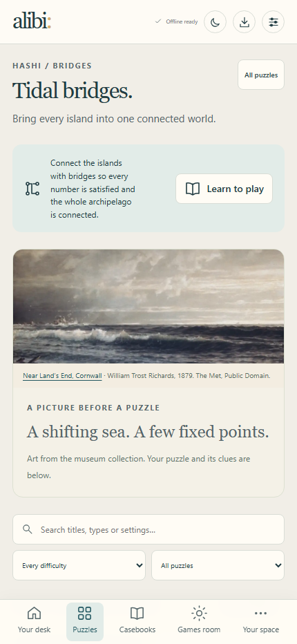
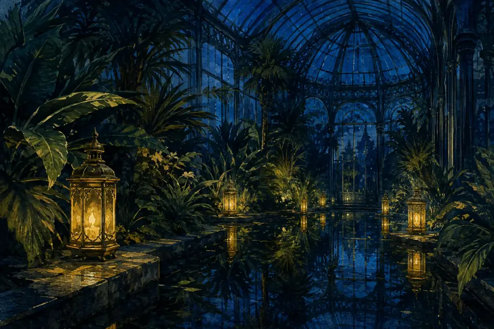

alibi:
The puzzle collection
Tidal bridges
Connect a
whole world.
A few fixed points. A shifting sea. One connected archipelago.

Current product capture01Tidal bridges · 8 puzzles
alibi:
Thirteen ways to think
The collection is open
Find the rule
that fits you.
Logic grids, lanterns, trails, aquariums, and more.
 Current product capture
Current product capture0213 puzzle families


Open a file
Take your
time.
Every detail tells a story. Every puzzle stays on your device.
Find something to wonder about
03116 puzzles to explore